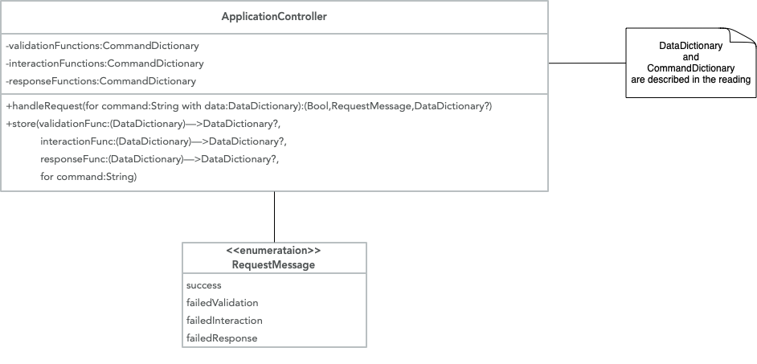
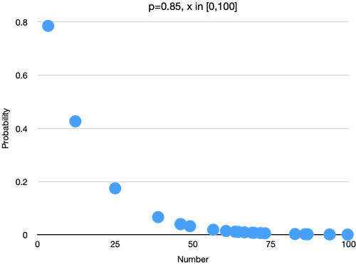

Your Tasks
Before beginning these Tasks:
- Make sure you have reviewed the \(\lambda\) Functions and Closures course content.
Task 1
Rewrite the Application Controller example in the reading to be a Swift module implementing the design found in the UML diagram below. Document any public functions.
The validation, interaction, and response closures may, or may not, return a new or modified DataDictionary. If validation, interaction, or response fails, handle that failure gracefully as in the reading.
Exercise your code. To do this, create validation, interaction, and response closures for the command login using as data that which is traditional. Your interaction function should pretend to access a database of information that would allow you to determine if the login data is valid. Have one data set that produces a successful login. Any other data sets should produce a login failure.
Also make sure you are validating the login command's data in the validation function. You will need to decide what formats and sizes the data must have to be valid. Exercise your validation function with both success and failures.
You will need to decide what the appropriate response function results are for a successful login. This could depend on the situation you are simulating with your exercise code.
Task 2
Create a random distribution stream similar to but different than the one you saw in the possible solution for week 3 task 1. The required structure a generalized version of the TriangularDistributionStream. The name of the new stream is RandomDistStream. It is to have two properties. The first is a Dictionary with the keys of type String and values of type Any, since Any is the base class for any standard type in Swift. The second property is a closure. The closure has one parameter that is a Dictionary Optional with String keys and Any as the values. The closure returns an Any. RandomDistStream must also have a function called next that has no parameters that returns an Any. Calling next repeatedly yields a stream of random numbers for the distribution calculated by the closure.
This function design allows you to create a stream that uses any distribution, not just the triangular distribution you saw in the code example. By using Any as the types for the input and the results, this distribution can return Double, Float, or Int values of any size.
Write the RandomDistStream structure. Rewrite the code from the triangular distribution stream so that it can be stored as a closure in the RandomDistStream. Create an instance of RandomDistStream and exercise your code to make sure it is working correctly while generating a random set of numbers that are distributed triangularly.
Write another closure that can be passed to a different instance of RandomDistStream. This closure is to allow the stream to generate a stream of random numbers that have a logarithmic distribution. The mathematics for this calculation is below.
\[ p,x\in \mathcal{R}^+\\ p\in [0,1]\\ f(x)=\frac{p^x}{-x \log (1-p)}\]
Here is a scatter plot of 21 randomly chosen numbers in \([0,100]\) and the probability of that number. This plot was done in a spreadsheet. You can check your work by counting how many times your code produces random numbers that fall into a set of evenly sized ranges (buckets) and plotting the count for each range. If the scatter plot of those values is logarithmic in shape, similar to the image below, your code is working correctly.
Review
After completing the previous steps:
- Review one of the many possible solutions for this task,
- Compare and contrast your code with the possible solution's code, and
- Make note of any improvements you could make for future tasks.
Stretch (optional)
Write additional closures so that your RandomDistStream calculates random numbers using two distributions from the Wikipedia list of distribution types other than uniform distributions. Exercise both of your closures to check if they work.